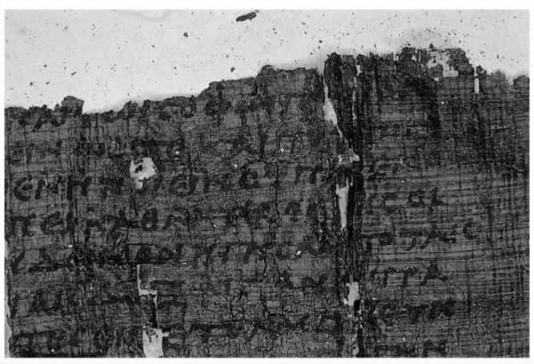

我们为什么要阅读柏拉图的《理想国》呢？这个问题可以从多个角度来思考。它也许意在追问阅读这部著作的意义——我们从中得到什么样的哲学启示；也许意在探寻将这部著作而不是其他著作呈现给我们的历史原因；我也可能出于大学必修课的要求来阅读这部书，许多人都是这种情况。我们并不是在真空中阅读哲学著作，在阅读一部著作时的背景和因阅读而带来的收获之间存在着一种重要的联系，尽管这种联系还远未被完全理解。
第一章向读者介绍了古典哲学论争中一个重要的问题，（我希望）它并不难理解。但并不是古典哲学中的所有问题都这么容易被现代读者所接受。本章会收起在这一问题上的笔墨，来讨论哪些因素使我们无法接触古典哲学的文本及主题。只有当我们了解了哪些因素促使我们对一些古典哲学产生了直接的兴趣，哪些因素妨碍了我们接触古典哲学，我们才能知道如何对这一来自遥远而不同文化的哲学文本进行阅读与思辨。
在讨论《理想国》之前，我们应该思考古典哲学的整个传统——它怎样流传到我们手中；我们接受它时已发生了怎样的变化；这种变化的方式怎样（比如说）影响了我们对柏拉图以及类似《理想国》这种著作的阅读。

图3 享乐主义者菲洛德穆关于愤怒的一部莎草纸作品的片断
古典哲学首先是一种极为广博而丰富的传统。它始于公元前6世纪，在西方随着西罗马帝国的灭亡而终止，在东方随着拜占庭王国的衰败而结束。古典哲学在希腊城邦（尤其是雅典）兴起并获得发展，在罗马人统治了地中海及其周围地区时，古典哲学得以进一步繁荣，并在罗马帝国的大部分时期成为其文化的主导力量，且不同程度地融入了基督教文化。古典哲学文本体系庞大且极其繁杂。其中包括许多类型迥异的哲学运动，它们有些推崇神秘的直觉与教义，有些主张缜密的论辨；还包括了许多观点各异甚至对立的流派，例如斯多葛派和伊壁鸠鲁派；另外也包括很多立场迥异的哲学观点，如唯物论、二元论、怀疑论和相对主义。它们之间的差别将在第六章有更详尽的讨论。这里我要集中讨论那些影响我们接受传统的因素，这些因素影响我们怎样将古典哲学视为成就了一种传统或经典，也影响我们如何将某哲学家视为至关重要。
首先，我们只有拥有传统，才能考虑传统中的哪些部分重要。西欧的大部分古典哲学在西罗马帝国灭亡时流失，主要原因出自文化的变化和政治的不稳定。在数百年内，除了柏拉图的对话集《蒂迈欧篇》之外，唯一被深入理解的古典哲学著作是亚里士多德的著作，他的思想主导了中世纪的哲学。文艺复兴时期，人们多渠道重新发现了更多领域中的古代哲学家。但随着历史的因缘际会与命运沉浮，许多作者的原稿遗失，我们只能读到关于其理论的二手评论以及他们自己的零星话语。在所谓的希腊化时期，所有“前苏格拉底”哲学家以及亚里士多德之后的许多哲学家都经历了这样的命运。关于古典哲学的著作不断有新的发现，主要是在埃及干燥的沙漠中发现了写在莎草纸上的著作——有一批伊壁鸠鲁的著作在维苏威火山爆发时以炭化的形式保存了下来。但是鸿沟依然存在，要想了解哲学中的一些人物和流派，我们仍要依赖后人粗浅的描述。
公元79年，维苏威火山爆发，在那不勒斯附近的赫库兰尼姆，融化的火山岩覆盖了许多贵族的乡村住所。其中一个住所自18世纪便开始进行挖掘，里面有哲学家伊壁鸠鲁的大量著作及后来的追随者讨论其思想的著述。这些著作展示了伊壁鸠鲁派内部及该流派和其他哲学流派间尚不为人所知的哲学争辩。这些书为莎草纸（古代的一种纸）制，学者们对其中烧焦的部分进行了细致的研究。
许多古典哲学真迹的发现均具有相似的偶然性，到我们手上的也是零零星星、不成体系。
上述情况引起了研究方法上的差异。有时只能通过研究零散的片段以及二手资料来了解作者，而那些二手资料又融入了阐释者自己的态度。所以，要想正确理解所研究的哲学观点，必须先从历史和解释的角度入手。直接进入哲学主题会有冒险性，得出的观点可能不成熟，结果只是反映了我们自己的哲学兴趣。如果作者的论述以哲学对话的形式出现，作者参与对话，我们又能够读到这样的著述，那么这就是一种更直接地接触作者的方式。因此，柏拉图和亚里士多德哲学得以在哲学系的讲台上占有最显要的位置也便不足为奇了：我们拥有他们的全集，而像伊壁鸠鲁这样的作者，我们仅能读到他们零星的原文。
然而，这种对比可能被夸大了。柏拉图是唯一一位我们有把握说已拥有其全部出版作品的作者。亚里士多德发表的著作没有一部能够完整地保存下来，流传到我们手里的是他的（极丰富的）研究和讲学笔记，这些笔记本身在解释上就存在问题。而即使柏拉图也不是一个容易读懂的作者：一方面，对话形式拉远了作者与他所提观点的距离，并且与其他任何古代哲学家相比，对柏拉图的诠释可能是最千差万别的。所以如果不成熟地认为柏拉图和亚里士多德与我们的哲学问题有密切关系，就很有可能像误读前苏格拉底学说一样误读这两位思想家。对于有些作家和流派，我们只能读到其部分原作，但它们仍会提出一些立刻吸引住我们的哲学问题，当然，对这样的作家和流派，我们还要从历史的和解释学的角度做些工作。过去的二十年中，古典哲学在研究、出版和教学的旨趣上均发生了很大的变化，由原来的仅仅关注柏拉图和亚里士多德转向研究希腊化时期（后亚里士多德时期）的哲学家。
古典哲学的传统是多面的，可是我们的研究为什么集中在古典哲学的一个方面而不是其他方面呢？尽管哲学传统的传播过程变幻莫测，并且对于历史或哲学兴趣是不是推动性因素，人们也莫衷一是，但哲学兴趣始终是一个不可或缺的因素，而且该兴趣点随着时代的变化而变化。二十年前，对柏拉图和亚里士多德的研究处于主导地位；相比之下，目前的研究者和教授者则将视线转向了更广泛的问题和更多的哲学家；类似的转移和变化过去也出现了很多次。由于没有一个单一的中立办法来全面囊括庞大的古代传统，更不用说讨论，那么有选择地研究也就不足为奇。如果我们只接触了一种研究古典哲学的方法，也不必感到惊讶——这看起来既自然又必然；我们也会因此看不到其局限性，尤其是当这种传统一代一代地由教师传授给学生，其地位又通过相关书籍和期刊文章得以巩固的时候。
有时我们至少可以追问：什么样的智力背景使得不同时代的人们以某种方式对古典哲学传统的不同部分感兴趣。有时古典哲学的一些著作似乎销声匿迹了，它们举不出扣人心弦的主题，也没有提出答案富有争议的问题。而在另一些时候，它们确实又这样做了。至少在某种程度上，我们自己的哲学兴趣决定了我们关注古代传统的哪一部分。（应该如何对它们及其变化作出解释则另当别论。）因为我们会看到，这并不是单行道。研究古典哲学文本，能够帮助我们厘清并加深对一些问题的理解。（详见第三章。）由于一些古典哲学著作自18世纪以来在传授和发扬西方哲学思想上的显著作用，它们不仅确实构成了该题材的古代史，而且也构成了其现代传统的一部分。
柏拉图的《理想国》是一个很好的例子，可以用来说明一部古典哲学著作如何在当代哲学话语中愈发引人深思或不再是个值得思考的话题。它可能是最富于戏剧性的例子了。
在19世纪的一部分时期和20世纪的大部分时期，《理想国》无疑是最广为人知的古典哲学著作。它可能是古典哲学著作中唯一一部拥有众多读者的著作。在许多国家的大学、学院和中学开设的古典哲学课、哲学入门课、“西方文明”课、政治哲学课和人文课中，《理想国》均是学习的内容。如果你在这些课程的任一科中必须接触古典哲学或柏拉图，《理想国》显然是首选。在有关柏拉图的现代读物中，《理想国》是柏拉图思想的核心和精华，最能代表柏拉图思想最重要的方面。
柏拉图的《理想国》
在《理想国》中，柏拉图试图说明一个人生活得快乐在于其正直、高尚——这要靠人自己去争取，而财富、地位和其他通常受重视的事物却与幸福无关。这一富于挑战性的论题的依据为：美德存在于人的灵魂的合理有序、结构井然，以及理性在其中的主导地位（见第一章）。合理有序而又如此高尚的灵魂，好比合理有序而又如此健康的体魄，会使一个人生活幸福，而破坏了灵魂的有序状态则会导致不幸。这部著作的框架，就是柏拉图对这一观点的展开和辩护：同大众信仰相反，柏拉图认为幸福存在于美德，即灵魂的合理有序状态中，甚至在可能出现的最贫穷、最痛苦的情况下也是如此。
作为灵魂结构的模型，柏拉图描绘了理想社会的构架：不同类别的人按照彼此受益的方式有序地存在，由“卫国者”进行治理；像理性为整体人的利益服务一样，“卫国者”为社会上大家的共同利益服务。柏拉图将这种对社会共同利益的关注推向了极端：卫国者不会有家庭生活或私有财产，生命中的大部分时间要用于培养那种抽象的形而上学的“形式”说（关于这一点参见以下第82-83页）。惊人的是，不仅是男人，女人也要成为卫国者——或“哲人王”（当然也有“哲人王后”），有时这样称呼他们是考虑到他们接受了严格的哲学方面的教育。
在《蒂迈欧篇》和未完稿的《克利提亚》中，柏拉图通过亚特兰蒂斯的故事，以叙述体进一步丰富了这样一幅理想社会的构图。以这种理想社会的标准来反观历史，它是反对那种有异国情调、浪漫但腐朽的亚特兰蒂斯社会的（亚特兰蒂斯是位于大西洋中部的一个岛屿，后来沉没）。柏拉图没有写完的这个故事，可能是他在哲学传统以外对文学领域最具影响力的贡献。
另一个要点是：阅读《理想国》主要是因为它简要描述了一个理想社会。柏拉图在该书中描绘了一个近乎完美公正的社会，在这个社会中，根据财富和政治权利的不同，人们有着完全不同的劳动分工。统治者为“卫国者”，他们会全身心投入到公益事业和国家管理中。那些从事我们所说的经济活动的人，则会被排除在政治管理活动之外，因为他们的生活方式使他们只考虑自身的利益；他们不适合登上公共舞台，因为在公共舞台上需要捍卫的是公共利益。相比之下，卫国者阶层的人是受过教育并以牺牲个人利益、服务公共利益为准则的。
人们通常认为，这一理想化的政治框架是该书的思想主线；确实，在介绍这本书时，人们会把它当作柏拉图对当时在他看来属政治问题的主要思考。《理想国》包含很多主题。然而，人们常常认为，把这些主题联系在一起的是柏拉图的政治观点，即只有在一个为所有人的利益进行治理的理想国度，人们才能善良，而至幸福。有时这种由智者进行统治的理想被看作是对柏拉图成长于其中的希腊民主文化的回应，他的回应方式被认为是精英统治论及反动精神。阅读该书的这种方法如此根深蒂固，以至于至少在美国图书馆，《理想国》及相关著述被摆放在政治科学书架上，而不是摆在哲学史部分。我们查找该书的方法便向我们提示了应该如何来阅读它。人们也常想当然地认为，应该讲授这本书对政治思想的贡献，其他方面仅作为补充说明。
但是我们应该这样来阅读此书吗？还有其他的阅读方式吗？
在古代世界，《理想国》被作为柏拉图对话集之一来阅读，但绝不被视为他最重要或最核心的思想。当哲学家开始系统地研究柏拉图的思想时，他们推崇的对话集是《蒂迈欧篇》，那是一本诗意的宇宙论。《理想国》中最著名的观点是理想的统治者应该没有私人的家庭生活，但“妇女和儿童应该共有”这一众所周知的论断则被视为怪异而非深刻。柏拉图在书中的政治观点遭到亚里士多德的批判，也没有进入古代政治思想的主流，虽然其他对话集，如《政治家篇》和《法律篇》中论及的政治思想成为了主流。
在中世纪传播柏拉图著作的脉络中，人们从伊斯兰教传统的角度来研究《理想国》，认为它提出了一种理想的宗教领袖所应具备的精神和世俗权力的结合。在基督教的西方，这一思想并没有得到发扬。他们倾向于从政教分离的角度来思考问题，这与之前这部著作的研究长期被忽视有关。文艺复兴时期，这部著作引起了极大关注，意大利的思想家把自己视为柏拉图主义者，认为它提出了理想的乌托邦幻想。整个17至18世纪，柏拉图在哲学界遭到冷落；如果他的《理想国》有人过问，也仅仅被看作是个怪物。（见第82-83页框内部分。）
后来在19世纪，柏拉图的地位发生了戏剧性的变化——他在古典哲学研究中上升到显著的位置，并持续至今。柏拉图在英国地位的上升尤其耐人寻味，它经历了三个阶段，每个阶段都与不同的哲学研究方法相对应。
柏拉图全部著作的英语首译本由托马斯·泰勒于1804年完成。泰勒自学成才，在其坎坷的一生中，翻译柏拉图的作品完全是出于钟爱，因此评判他的译文糟糕确实令人难于启齿。泰勒将柏拉图的思想置于新柏拉图主义框架中进行审视（新柏拉图主义是人们后来对柏拉图的一些形而上学思想从神秘主义角度进行的详细阐释），得出的结论受到浪漫主义作家的欢迎，但受其影响的却是华兹华斯的诗歌而不是哲学家们。
19世纪早期，被称为功利主义者的哲学家首次一致尝试将柏拉图看成论辩型的哲学家。这令人诧异，因为功利主义者关于伦理学和形而上学的观点几乎完全不同于柏拉图的观点。然而，约翰·斯图亚特·密尔一派重新确定了柏拉图的论辩型哲学家的地位。功利主义哲学家乔治·格罗特的《柏拉图》（1865）是第一部基于严谨学术研究的论述，该书单独讨论了每一个对话自身的主题和目的，认为柏拉图追求一种无确定答案的哲学探讨，有时武断，有时与他人辩论而自己却不给出结论。格罗特不赞同柏拉图的观点，但富于同情地指出：柏拉图采用了不同的辩论方法，遵循了不同的方向。从本质上来说，柏拉图是通过论辩来追求真理的；在这样的一幅图画中，《理想国》只是众多对话集中的一个，其中蕴含的政治观点并不被看作柏拉图思想的核心成分。
但是，最终胜出的柏拉图是第三个柏拉图，是理想主义哲学家本杰明·乔伊特的柏拉图。乔伊特以一种通俗易懂的形式翻译了柏拉图的所有作品（1871年出版），第一次使柏拉图走近普通读者。（我们想当然地认为翻译是正常的，但是只是在几年前，《理想国》才得以被译成韩语和冰岛语。当读者需要阅读希腊语或另外一门语言的《理想国》时，却只有受过教育的名流才能做到。）乔伊特认为柏拉图是有理想主义倾向的系统的思考者，对乔伊特来说，《理想国》在柏拉图将伦理学、形而上学与政治学结合在一起的方式中起到了核心作用。另外，他认为这种政治理想处于中心位置——这一观点被后来几乎每一个阅读此书的人所认同。
为什么柏拉图的理想国家说看起来是一种严肃的政治思考（而不是乌托邦空想）？到19世纪中期，政治思考关心的问题似乎与《理想国》相关。民主和全民公投虽然长期被贬为不守纲常的暴民统治，它们却逐渐成为真正的政治选择，古希腊的民主城邦也逐渐取代古罗马共和国，为英国和美国政治家和政治思想家思考自己的国家提供了一种模式。古希腊的历史第一次以积极的态度来呈现古代民主。如果《理想国》可以被看作是柏拉图对民主的思考，那么这本书对19世纪政治辩论的贡献应该很多，有积极的也有消极的。事实也的确如此。
乔伊特帮助确立了《理想国》在古典研究中的中心地位（该地位至今不衰），并且将其作为严肃、富于挑战性且理想的政治文本来研读，这已广为学术界所认同。19世纪在大学学习过《理想国》的精英男士们应该受到激励而树立起为公共利益忘我奉献的理想，这种理想可以矫正被视为自私的经济野心。这种卫国者的理念被认为是能人统治论：政治上的统治地位要靠教育和勤奋工作来赢得，而不应靠贵族式的特权来继承。柏拉图关于妇女卫国者的观点作为一种对理想的表达发挥了作用，对这种观点进行深思会帮助男人树立起妇女在社会上享有同样的政治权利的观念——她们有选举权和受教育的权利。（这里我们看到维多利亚时期对性别介入的焦虑：乔伊特竭尽全力将妇女卫国者和柏拉图关于“妇女和儿童应该共有”的观点区别开来。）柏拉图坚持主张为公民搭建一个大众教育系统，这一主张被视为推动了民主化进程，普及了教育，并将提供这种教育视为国家的义务。柏拉图抱怨民主，认为管理需要专门知识——这一想法被用于关于现代代议民主和扩大选举权的不间断辩论中。《理想国》提供了思考现代问题的素材，而19世纪的人们明确了柏拉图的理想国家说是该书的主导观点。
乔伊特关于《理想国》的诠释经久不衰。在讲英语的国家，它的生命力超出了理想主义者的哲学及产生这一哲学的政治辩论。即使在今天，人们也通常认为：阅读这本书的简便办法就是把它当作理想主义者的政治宣言，在此宣言中形而上学和伦理学诸问题在理想国这一框架内得到展开。对于这些思想到底有多少“实用”价值，学者们莫衷一是：有些学者仅把它们当作激发人的理想的力量，其他学者则把它们视为蓝图，可以直接付诸实践。而在20世纪，对这本书的一般反应却来了个大转弯：从尊重到敌视。维多利亚时代的政治较量一结束，《理想国》就与更幽暗、更现代的观点联系到了一起。从20世纪30年代开始，“卫国者”的观点已被看作极权主义，有时甚至是法西斯主义的观点，而柏拉图要普及大众教育和文化的主张更被说成是宣传鼓动和洗脑。
《理想国》是政治蓝图吗？
“是否《理想国》揭示了三四个伟大的真理，在柏拉图看来，用国家的形式来表达他的思想最自然不过了？……借助希腊城邦，柏拉图向我们展示了他的想法——关于神的完美，即善的想法，它似眼睛能望到的太阳；关于人的完美，它是公正；关于教育，它始于青年时期，并在其后的年月中延续；关于诗人、智者和暴君，他们不是人类真正的老师，是邪恶的统治者；关于‘这个世界’，他们的体现；关于一个国度，它不存在于大地，而高悬于天空，成为人类生活的模式与规范……我们从而不必讨论柏拉图所描绘的国家是否具有现实性……因为他的思想可行与否与其所蕴含的真理没有任何联系。”
本杰明·乔伊特，《理想国》英译本前言
“哲人王即柏拉图本人，而《理想国》是柏拉图获取王权的声明。”
卡尔·波普尔，《开放社会及其敌人》，第一卷
今天，尽管人们已不再那么激烈、那么愚蠢地抨击法西斯主义，却极少有教师认为《理想国》蕴含着可以效仿和鼓励的积极思想。更常见的说法是，它蕴含着一套令人厌烦的、精英主义的而又排他的政治主张，即使是那些一直被教育要学会容忍和包容的学生，也能够毫不费力地提出批评意见。然而，最根本的假设没变：本书的主旨是对理想的政治共同体进行描述，这个共同体的组织和结构为政治辩论所涉的真正问题提供了答案。
《理想国》的政治理想
“柏拉图并非一个理想主义者，政治上极权主义和社会有机体论与他的想法是格格不入的。他眼中的人类社会，既不是原子或个体的简单并置，也不是一个自顾自地发展而与其个体成员无关的超级有机体。它是由个体组成的群，由一个共同的目标结合在一起，能够合作共事。”
约翰·怀尔德，《柏拉图的现代敌人及自然法学说》
“我认为柏拉图的政治纲领，从道德上来讲远非优于极权主义，而是基本上与其一样。”
卡尔·波普尔，《开放社会及其敌人》，第一卷
在这方面它一直如此实用，而且引发了如此之多的哲学研究，以至于使人很容易忽略一点，即将《理想国》解释为本质上属于政治学说是维多利亚时代的做法，而我们已不再拥有像维多利亚时代那样的理由把这部著作当作一种能够引起共鸣的政治典范来研读。只要看一看自19世纪以来关于这本书的诸多相互矛盾的阐释，这一点便很清楚了。政治角度的阐释之所以一直存在，在当前其部分原因是，作为政治哲学著作，它易于评论。因此它一直被作为一种教学工具，充当一个轻而易举便被攻破的靶子。然而现在对这部著作的类似评价已经尽其所有，许多学者正越来越关注阐释本身的基础。
《理想国》是 一部政治著作吗？这是一个复杂的问题，没有一个简单的答案。但是当发现政治角度的阐释只有极短的特定渊源时，你可能很想自问（如果你已经读过这本书）：你当时是受到什么启发来读这本书的？为什么？你可能想回顾它的文本，并且怀疑当时自己受启发去阅读本书的方法是否是最好的方法。
《理想国》的一个显著特征，就是对理想国家的叙述仅占该书的一小部分。它过于简短粗略，不足以被称为政治行动的“蓝图”，而且也不是该书的主要框架。这本书的主论题在第二卷的开篇提出，在第九卷的结尾作答；它包括柏拉图试图回答的这样一个问题：“我为什么要讲道德？”讲道德似乎是让他人而不是我本人受益。我在生活中为了追求个人目的而忽略或侵占了别人的利益，这样做难道不是更好吗？柏拉图认为，对一个人来说，即使在现实世界可能有的最糟糕的环境中，遵奉道德至上的生活从理性来看也应该被当作最好的生活。为了说明这一点，柏拉图使用了理想国家作为比拟对象来解释讲道德的人的灵魂结构。正如他在论证的最后所说，理想国家向我们展现了这种抽象结构，讲道德的人认为这是一种理想得到内化、变为一种期望过上美好生活的愿望。但是理想国家说并不是统领《理想国》全书的观点，柏拉图提出的关于现实世界的问题也无法在不完成书中大部分论证的前提下借助于一个理想国家说来解决。
显然，这仅是描述该著作总体计划的开始。你可能要自问，理想国家说在说明个人灵魂的结构方面起了什么作用？与柏拉图在对话集《政治家篇》和《法律篇》中的政治讨论相比，《理想国》中的政治观点有多少严肃性？最为根本的是，你可能要问，将理想国家说引入到关于个人道德的论争中是否是柏拉图的一个较好想法？当然，它是柏拉图更具启发性的观点之一。
为什么自19世纪中期开始，人们常常将《理想国》主要视为一部关于政治学说的著作？显然在某种程度上，维多利亚时期的人们，以及后来的几代人，已经利用《理想国》来形成他们自己的观点，并且通过研究这部著作知道有必要这样做。柏拉图笔下的卫国者被那些为建立一个更公平的社会而操心的维多利亚时代人士看成是精英统治者，也被那些为极权主义国家而焦虑的20世纪思想家们看成是法西斯主义的老大哥 。但是假如从《理想国》中能够得出如此不同的结论，我们究竟还能不能在其中找到一种单一的政治哲学呢？
这可能是个令人失望的想法。它促使人们反思这样一个问题，即并没有真正的理由对这本书作客观的阐释和评价，每一代人甚或每个读者心目中都有自己的《理想国》，或至少推衍出其中的政治哲学。跳出后现代学术圈，这种结论似显悲观。这本书确实似在言说某种问题，读者的关注点不同，便会出现论争。它以一部哲学著作的面貌出现，鼓励我们通过理性的争辩和讨论来发现真理。
对《理想国》的阐释千差万别，我们不应据此就认为这落入了阐释的相对性，而应认为这显示了文本的丰富与深刻。自乔伊特以降，即使这部著作的政治内容被极度渲染，但对文本的解读却鲜活而富有创见；在文本的末尾，我们可以做一回顾，看看文本中蕴含的不同思想还有多少可以发展丰富。《理想国》进入并深化了19世纪和20世纪的许多政治讨论，我们对其进入和深化的方式深感钦佩。研读一部古典哲学著作的方式可能是一条双向路径，《理想国》便是一个最佳例证。对一部古典哲学著作进行讨论会丰富这种讨论，同时这种讨论又会提供一种解读这部著作的视角。
人们易于把《理想国》不断变化的命运视为一种警示：当一部古典哲学著作被当作某种“适于思考”的东西，脱离了支撑物（即柏拉图的著作整体）或者采取到目前为止我们所接受和研读它的方式时，情况会怎样呢？但是我们也可以更虚心地接受教训，在研读一部古典哲学著作时，我们应该至少明白三点。第一，我们阅读和阐释这部著作时，应把精力集中在文本本身的研读上。第二，从哲学角度讲，什么更突出、更有趣？什么会使我们更聪慧？对于这样的问题，要有我们自己的设想。第三，我们研读的著作是否能够激发自身富有创意的哲学思考？这些因素可能影响力不同，并以不同的方式发挥作用。从《理想国》的研读史来看，我们知道了一点：不了解这些因素可能会导致毫无结果地去争辩这些彼此冲突的阐释孰是孰非。
如果我们对第一章的结论进行思考，就会发现：有时古典哲学中的一个问题可以立刻使我们介入其中，但是现在，我们也会发现这种态度中的潜在危险。我们还应该警惕自己看问题的方式，其中个人哲学兴趣的变化会对我们确定古代传统中哪些哲学问题有趣这方面产生影响。由于读者兴趣的变化，一部著作的地位会从边缘到中心，从伦理著作变为政治著作，最极端的例子应属《理想国》。其寓意并不是说我们对《理想国》的阐释仅是自己的偏见，而是说我们应该清楚自己在哲学上的兴趣及其所起的作用，以便减少它们对我们的潜在影响。我们对古典哲学的某些部分丝毫不感兴趣，而对另一些却非常熟悉。有时我们不应将它们与现实联系起来，而应该关心我们对其进行阐释的传统。
对古典哲学思想的研究可能在第一章听起来还算容易，但现在听起来可能更难了。对于古典哲学中的许多文本，尤其是像柏拉图的《理想国》这样的最著名的文本，正确的方法当然是把它们既当作可供阅读和辩论的文本，又当作就其自身而言属于我们之前悠久的研究史中的研究对象。毕竟，这是我们所期望的。当我们开始阅读古典哲学家的作品时，我们像是第一批探索者；但是不久就会发现，我们与它们相隔不仅仅是二千年的历史，中间还有许多阅读和撰述它们的传统。在找到把我们和古人分开的因素后，在找到我们所研究的“经典”文本不断变化的原因后，我们更多地从哲学上讨论这些因素，而不是将其与哲学讨论分离开来。